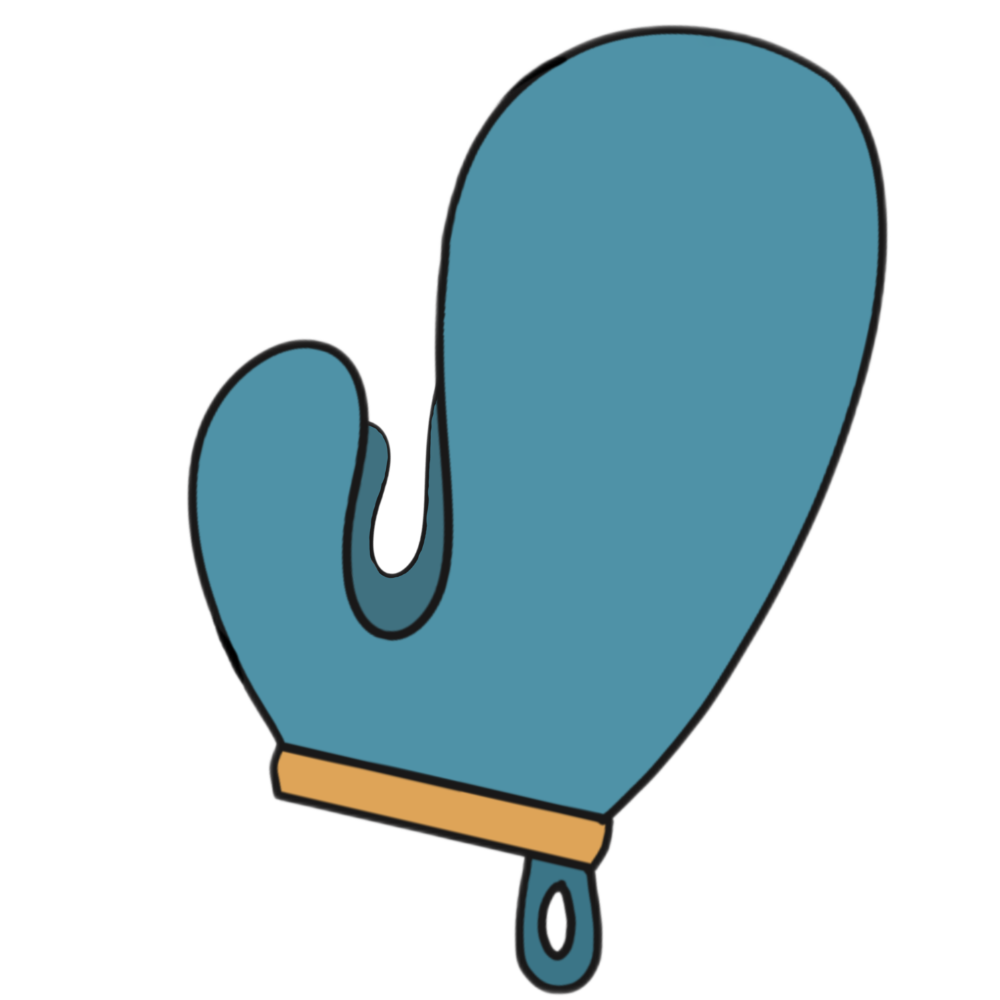

<p-menubar [model]="[]">
    <ng-template pTemplate="start">
        
    </ng-template>
    <ng-template pTemplate="end">
        <input type="text" pInputText placeholder="Search" class="w-full" />
    </ng-template>
</p-menubar>


<app-menu></app-menu>